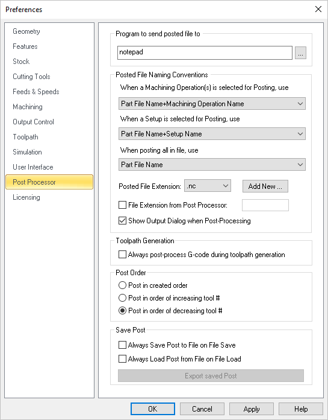

These preferences relate to posting toolpath operations to gcode files.
 CAM Preferences > Post |
This feature allows you to specify a program to display the posted file. This could be a NC editor or a text editor like Notepad.
|
This allows you to set rules for posted file name when post processing machining operations. When a machining operation is selected for posting you can set the output file name from one of the following options. •Part File Name + Machining Operation Name •Part File Name + Setup Name + Machining Operation Name •Setup Name + Machining Operation Name •Machining Operation Name When a setup is selected for posting you can set the output file name from one of the following options. •Part File Name + Setup Name •Setup Name When Machining Job is selected to Post All, you can set the output file name from one of the following options. •Part File Name •Part File Name + First Setup Name •First Setup Name Posted File extension You can select a posted file extension from the list or add an extension to the list by selecting Add new button. This displays the Post File Extension dialog shown below where you can specify a new file extension and click OK.
The new file extension is now set as your posted file extension automatically. By default VisualCAM performs interactive post-processing. That is, when you select a toolpath for post-processing, VisualCAM launches the post-processor and waits for it to complete. You can also turn off the display of the output dialog (post and save dialog). During interactive post-processing, VisualCAM launches the NC editor to view the output file. You can specify a different NC editor to use. See Program to send the Posted file to above for doing this. File Extension from Post Processor Check this box to "pull" the posted g-code file extension from the Legacy Post-Processor (*.spm) file. This ensures that whichever post that you use, your posted g-code file will match the file extension defined in the active post. Note: You must edit your legacy post and set the Output File Extension value from the General tab in the Post-Processor Generator. Show Output Dialog When Post Processing Check this box to always display the Post & Save As file dialog when you select Post from an operation (Mop), Setup or Machining Job. |
Always post-process G-code during toolpath generation Your G-code is stored with your CAM file so that the latest G-code is always available to you when you open a file. Uncheck this box if you do not want new G-code generated every time you generate a toolpath operation. |
Use these options to implement post priority. Post in created order Select this option to post operations in the order that they appear in the machining Job tree. Post in order of increasing tool # Select this option to post operations in the order of increasing tool number. The operation with the lowest tool number is posted first. Post in order of decreasing tool # Select this option to post operations in the order of decreasing tool number. The operation with the highest tool number is posted first. |
Always save post to file on file save The current post will be saved to the file when it is saved. CAUTION: The file's Current post will be replaced. Always load post from file on file load The post defined in a file you are open will become the new Current post post selected in the Post-processor options dialog. CAUTION: The post in the file you are opening will be replaced. If this is not desired, close and do not save the file. Export Saved Post Use this option to save the Current post in the active file to a post definition file name ending in *.spm |